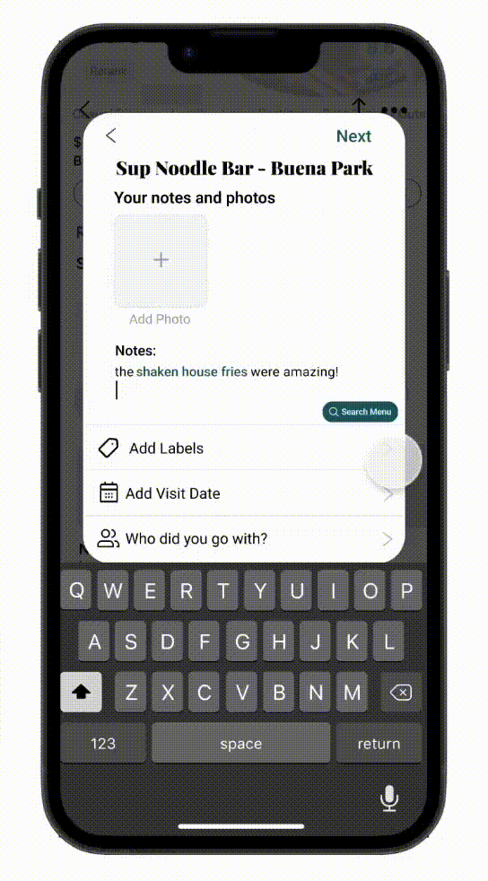
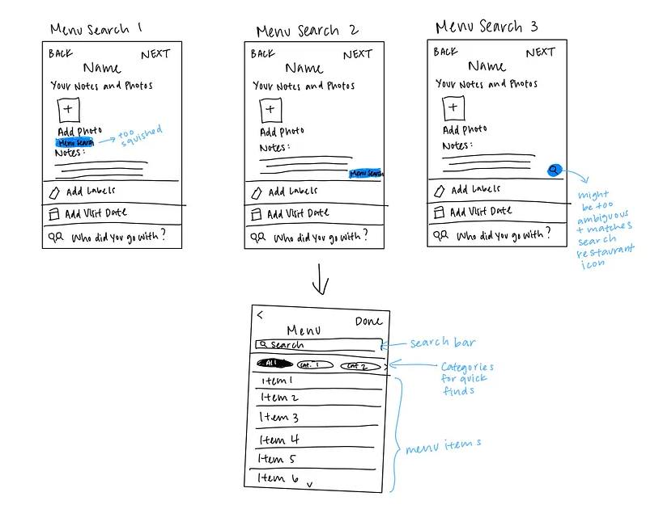
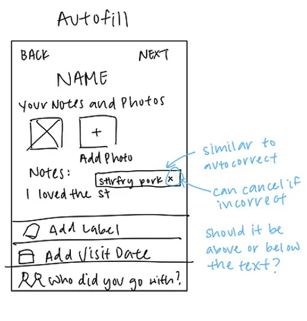
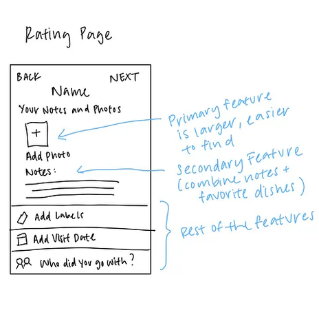
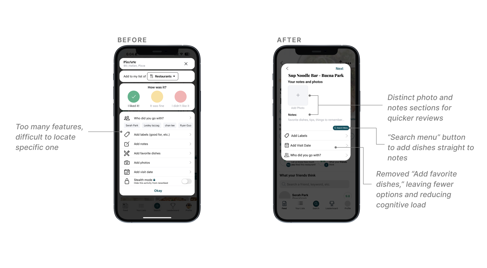
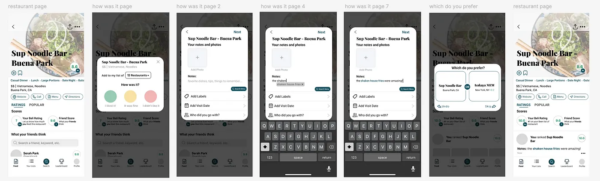

Reviews Reimagined: Restructuring Ratings Page
- Improved visual hierarchy to streamline the rating process
- Progressive disclosure to make reviewing more manageable
- Autofills as you type for a seamless rating experience

Problem
Beli's rating page overwhelmed users with too many choices, and the lack of menu search made it hard to log specific dishes — turning a simple task into a tedious one.
Solo
UX/UI Designer
Jan – Mar 2025
Beli is a food rating and restaurant tracking app. I redesigned the rating page and added menu search and autofill to make logging reviews faster and less frustrating.
Redesign the rating experience to reduce cognitive load and introduce menu search and autofill features that help users quickly log the dishes they want to review.
UX Research • User Interviews • Problem Definition • Sketching • Wireframing • Prototyping
01 Research: User Interviews
To see if others shared similar frustrations, I surveyed five Beli users, ages ranging from 18 to 30. From this survey I discovered the following:
User Finding
forget the name of their menu item at least 50% of the time when rating a restaurant.
Most Commonly Used Features
Least Commonly Used Feature
with 80% of users stating they either never or rarely use it, reporting that it was redundant or that they did not have a favorite dish to add.
"I never understood why Beli put the 'Add Photos' option at the bottom of the screen. It's the feature I use the most, and it's hard to find."— Beli User
"Sometimes you just don't have one favorite dish, and other times you may have many, so I usually just include all of my options in the notes section."— Beli User
02 Define
From the survey, I learned that users rarely used the "Add Favorite Dish" feature, even when they had favorite dishes, indicating a disconnect between users' goals and the app's current functionality. Many also struggled to remember the names of their dishes.
These findings shaped my goal of creating a smoother, more intuitive rating experience, driven by two objectives:
03 Ideation
I focused on creating a new feature to improve menu discovery and narrowed it down to three potential options, brainstorming pros and cons for each.
| Feature | ✓ Pros | ✗ Cons |
|---|---|---|
| Autofill / Suggestion Bar |
|
|
| Menu Search |
|
|
| @ Symbol to Trigger Search |
|
|
I decided to combine autofill and menu search solutions. Autofill would give the user a quick and easy way to add food items to their notes seamlessly, while menu search would allow them to scroll through the entire menu to find what they are looking for.
04 Sketches
I began roughly sketching out my vision for the autofill and menu search features I wanted to include on the rating screen.



From my sketches, I created a mid-fidelity mockup that makes "Add Photos" a large button at the top, followed by the notes section right below it.

My main goal was to avoid feature overload on the rating page, leading me to use progressive disclosure to break the review process into more manageable steps.

05 Solution


06 Reflection
Beli has made my food adventures across cities far more enjoyable. With my autofill and menu search features and restructured rating page, I hope to make ranking favorite spots effortless.
There are still ideas I'd love to bring to life. Through my user research, I unexpectedly discovered that none of my interviewees used Beli's "Featured Lists," where Beli recommends popular restaurants. To better align with user needs, I want to restructure the home page into two distinct sections: one for personal ratings and another for popular suggestions.
back to top ↑